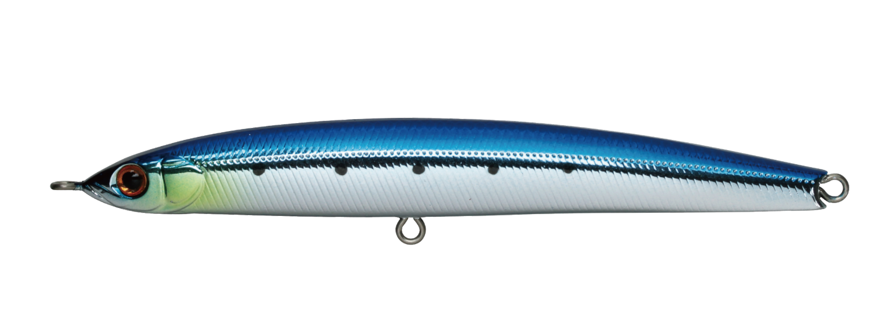
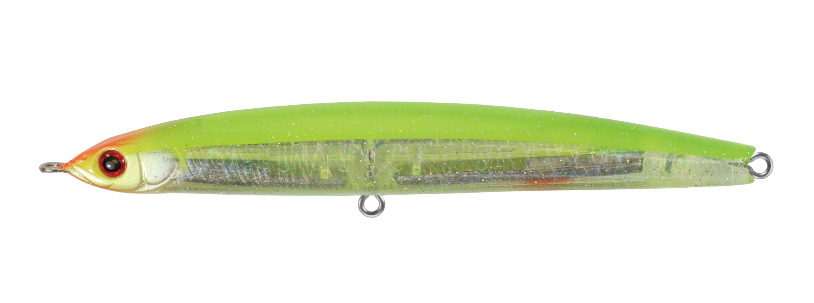
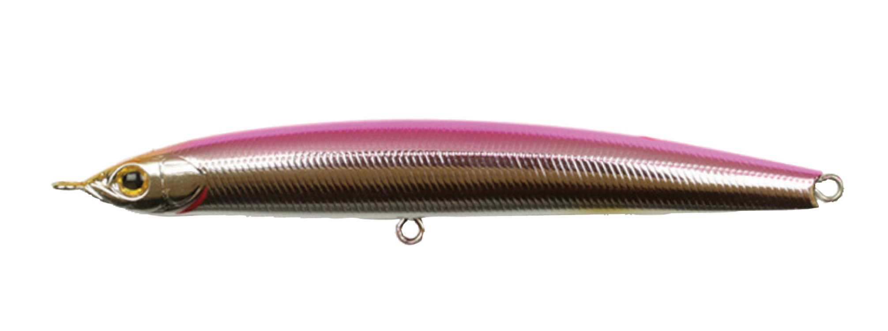
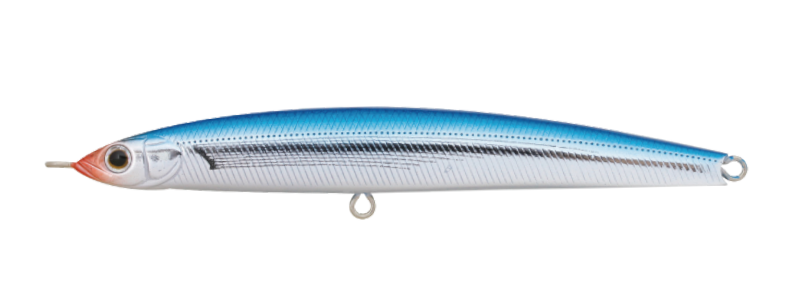

ザブラ モンスーンブレイカー115
（ZBL MONSOON BREAKER）
ザブラ モンスーンブレイカー115はZIPBAITS（ジップベイツ）のジグミノーです。
その名のとおり、強烈な季節風を突き破る遠投性能が持ち味。ジグミノーは直線的という概念を破る、ミノーのような柔らかいスイミングと、食わせの間を作るフォーリングバイブレーションを備えています。固定重心ながら、ザブラシリーズらしい高性能なルアーです。

画像出典:ZIPBAITS公式HP
スペック
- メーカー
- ZIPBAITS（ジップベイツ）
- タイプ
- ジグミノー（シンキング・固定重心）
- 全長
- 115mm
- 自重
- 29.0g
- フック
- カルティバ ST-46TN #4
- リング
- #4
- ターゲット
- サワラ・青物・シーバス・フラットフィッシュ
- 価格
- 2,530円（税込）※2027年1月1日以降は2,860円（税込）
▼今すぐチェック

モンスーンブレイカー115の特徴
飛びも泳ぎも常識破りの、異次元のジグミノー
-
季節風を突き破る遠投性能
強い向かい風の中でも飛距離を出せる遠投性能で、届かせたいポイントまでルアーを運べます。
-
ミノーライクな柔らかいスイミング
ジグミノーなのに直線的になりすぎない、ミノーのような柔らかいスイミングアクションで見せられます。
-
食わせの間を作るフォーリングバイブレーション
フォール中のバイブレーションが食わせの間を作り、沈めている時間も誘いになります。
モンスーンブレイカー115の使い方
基本は遠投してのただ巻き。ミノーのような柔らかい泳ぎで、表層〜中層を広く探ります。
巻きを止めたりロッドをあおったりしてフォールを入れると、フォーリングバイブレーションが食わせの間になります。リフト＆フォールも試してみましょう。
モンスーンブレイカー115の得意な状況
向かい風が強い日や、遠くのナブラ・潮目まで届かせたいとき。サワラ・サゴシや青物のショアゲームのほか、サーフのシーバスやフラットフィッシュにも使えます。
ワンポイント
モンスーンブレイカーには、130や「サゴシエディション」「サワラ」仕様もあります。狙う魚やシルエットに合わせて、シリーズの中から選んでみてください。
30g前後のジグミノーの使い分け
| モデル | 全長／自重 | 得意な場面 |
|---|---|---|
| モンスーンブレイカー115 | 115mm／29g | ミノーライクな泳ぎと遠投性能（本記事のモデル） |
| コンタクト イーノ サワラチューン | 129mm／30g | サワラに特化したケイムラ＆ベリーフック仕様 |
| ビーチウォーカー ビスタ100S | 100mm／34g | ボトム付近のレンジキープ。荒天時のサーフに |
同じ30g前後のジグミノーでも、泳ぎの質や得意なレンジが違います。ミノーのような柔らかい泳ぎで見せたいならモンスーンブレイカー、サワラ専用ならイーノのサワラチューン、ボトム付近をキープしたいならビスタ100Sと使い分けましょう。
人気カラー
全12色の中から4色を紹介します。

670 マイワシマイワシを意識したナチュラルカラー。イワシを追う青物やサワラに。

476 房総チャートチャートの背中で目立たせるアピールカラー。濁りやマズメに。

436 メタルピンクバックメタル系のフラッシングとピンクバック。朝マズメのサーチに。

489 メタル飛魚トビウオを意識したメタルカラー。トビウオがベイトの時期の青物に。
画像出典:ZIPBAITS公式HP
モンスーンブレイカー115に似ているルアー
-
 コンタクト イーノ サワラチューン
タックルハウス
詳細はこちら＞
コンタクト イーノ サワラチューン
タックルハウス
詳細はこちら＞
全長129mm・自重30gのジグミノー。サワラに特化した仕様で、同じ30gクラス。
-
 ビーチウォーカー ビスタ100S
DUO
詳細はこちら＞
ビーチウォーカー ビスタ100S
DUO
詳細はこちら＞
全長100mm・自重34gのジグミノー。ボトム付近をレンジキープしたいときに。
-
 カタクチジョニー125S
ポジドライブガレージ
詳細はこちら＞
カタクチジョニー125S
ポジドライブガレージ
詳細はこちら＞
全長125mm・自重34gのジグミノー。カタクチイワシを意識した細身のシルエットで。